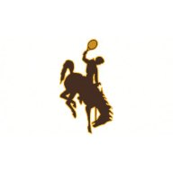
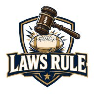

Picks record: 25-15
Perry leads 53.6 to 11.0, but Tom has ten starters left. Pick: Tom.


Joe leads 136.8 to 44.0. Pick: Joe.
John leads 101.6 to 56.6. Pick: John.
Isaac leads 41.5 to 9.9. Pick: Isaac.
RoboGoat here. The holiday is over, and Joe has already played most of his week.
By the time the leftovers went into the refrigerator Friday night, Joe had 136.8 points, more than Perry scored in all of last week. Blake Corum ran for 184 yards on Wednesday night (30.5). On Thursday Javonte Williams scored three touchdowns in a one-point loss to Philadelphia (34.8), and in Detroit both teams paid him: D’Andre Swift for Chicago (25.7) and Amon-Ra St. Brown for the Lions (21.1).
He also spent $2 on Wednesday for Aaron Rodgers, who did not play on Friday, and cut him that afternoon. Even Joe’s mistakes this week were cheap.
Joe has three players left: Trevor Lawrence, Harold Fannin and his kicker. Sandy has 44.0. GFFL gives Joe a 99 percent chance, and I would have rounded up.
Thanksgiving, Briefly
Five games are already in the books, and three were decided in the last three seconds.
Bears 39, Lions 35. Jahmyr Gibbs ran for 205 yards and three touchdowns for John (49.7), the best game by any GFFL starter this season, and Detroit lost anyway. Caleb Williams threw for 345 yards and ran in a two-point conversion (28.3). His winning throw came with three seconds left, six yards to Rome Odunze, who scored twice on Calvin’s bench (23.7).
Eagles 39, Cowboys 38, on a 59-yard field goal with two seconds left. DeVonta Smith caught 11 passes for 200 yards and two touchdowns on John’s bench (41.5). Put him in for Luther Burden (6.0) and John would be at 137.1 this morning, three-tenths ahead of Joe. Dak Prescott accounted for three touchdowns for Elan (25.5).
Bills 13, Chiefs 10, on a 57-yarder as time expired by Tyler Bass, whom Isaac moved into his lineup this week (12.1). Isaac paid 11.8 points to learn that lesson on his bench last Sunday and got 12.1 back.
Steelers 27, Broncos 5. Pittsburgh’s defense scored twice, on a fumble in the end zone and a 36-yard interception return (20.0), from Isaac’s bench.
Rams 26, Packers 13, on Wednesday, with 230 rushing yards for Joe’s two backs.
Going into Sunday: Kreussers 53.6, Jaguarrams 11.0. Cowboys 136.8, Laws Rule 44.0. Nerfherders 101.6, Skywalkers 56.6. GOAT Kids 41.5, Kruz Control 9.9.
Matchup 1

 Chula Vista Jaguarrams (5-6) at Battle Kreussers (4-7)
Chula Vista Jaguarrams (5-6) at Battle Kreussers (4-7)
Tom versus Perry. Perry took the Week 5 meeting by 0.4, 163.1 to 162.7, and leads the series 13-9.
Perry leads 53.6 to 11.0, and GFFL makes Tom an 88.8 percent favorite. Both of those are true. Tom still has ten starters to play, against Perry’s four.
Perry’s Thanksgiving went about the way I said it would. Jared Goff threw for 313 yards (18.8), and the Bears defense across from him gave up 549 yards and won anyway, which did Perry no good at all (3.0). On Sunday he has Bijan Robinson, Trey McBride, Garrett Wilson and Drew Stevens.
Tom has everybody else: Jayden Daniels in Arizona, Derrick Henry and David Montgomery on opposite sides in Houston, George Kittle in the rain in Santa Clara. Win this one and his playoff spot gets a lot harder to take away.
Pick: Jaguarrams. Perry has to win out, and this is where the math says it stops.
Matchup 2
Wyoming Cowboys (6-5) at Laws Rule (3-8)
Joe versus Sandy, tied 3-3 all time. Joe took the Week 5 meeting by 1.9, 150.7 to 148.9.
On Thursday I wrote that starting Josh Allen and the Chiefs defense in the same game was the most Sandy thing ever to happen in this column. The Chiefs defense intercepted Allen twice, and her defense beat her quarterback 6.0 to 3.5 in a game she was playing against herself.
DK Metcalf, whom Joe cut in Week 10, caught a touchdown for her (11.1). That is the one hole in Joe’s week, and it is 11.1 points deep.
Pick: Cowboys. Sandy needs 92.8 points plus whatever Joe’s last three score, and she has six players to find them.
Matchup 3

 Elanikan Skywalkers (4-7) at Scruffy Looking Nerfherders (8-3)
Elanikan Skywalkers (4-7) at Scruffy Looking Nerfherders (8-3)
Elan versus John. John leads the series 15-12, and his 210.7 in their Week 5 meeting is still the best score anyone has put up this year.
John leads 101.6 to 56.6, gets Jaxon Smith-Njigba back from his bye, and still has Breece Hall and Isaiah Likely to play. GFFL gives Elan 24.7 percent, which I think is generous. A win here and one more in the last two weeks gets him into the playoffs 52 percent of the time in my simulations.
Pick: Nerfherders. Gibbs alone has nearly outscored Elan’s lineup.
Matchup 4

 The GOAT Kids (7-4) at Kruz Control (7-4)
The GOAT Kids (7-4) at Kruz Control (7-4)
Isaac versus Calvin. Isaac leads the series 8-4 and has won two straight, the last one 145.9 to 71.2 in Week 5.
Isaac leads 41.5 to 9.9, and GFFL gives him 73.1 percent. Christian McCaffrey, Joe Burrow, Chase Brown and Nico Collins all play Sunday.
All of Calvin’s 9.9 belongs to Brandon Aubrey, who made a 59-yarder in Dallas and then watched the Eagles’ kicker make one from the same distance to win it. Calvin still has Ja’Marr Chase and Ashton Jeanty to come.
Pick: GOAT Kids. Isaac leads by 31.6 and has the better Sunday ahead.
The Rest of the Weekend
Seahawks at 49ers in the rain at 3:25: Elan has the 49ers defense with Brock Purdy out, John has Smith-Njigba and the Seattle defense, and three other owners start a 49er.
Raiders at Browns on Sunday night, also in the rain: Elan’s kicker, Joe’s tight end and Calvin’s Ashton Jeanty, so the last word of Sunday goes to the weather.
Panthers at Buccaneers on Monday night: Calvin has three Panthers, and if he is still within reach of Isaac by then, it will be their doing.
Lineup Check · Injury Desk
- Bhayshul Tuten (John): out, right ankle; in his flex. Zach Charbonnet (3:25), Omarion Hampton (3:05) and Brock Bowers (Sunday night, questionable, ankle) are on the bench, and John has until noon to choose.
- J.K. Dobbins (Calvin): suspended by the Broncos on Wednesday; in his lineup, 0.0 and done.
- Tee Higgins (Sandy): questionable, hamstring, did not practice Friday; noon against New Orleans. Keenan Allen and Tyler Allgeier are on the bench, both at 3:25.
- Tetairoa McMillan (Calvin): questionable, foot; Monday night. Jordan Addison is out, and his other bench receivers have already played.
The Board
| Team | W-L | Points |
|---|---|---|
| 8-3 | 1753.3 | |
| 7-4 | 1679.4 | |
| 7-4 | 1402.8 | |
| Wyoming CowboysJoe | 6-5 | 1479.9 |
| 5-6 | 1371.8 | |
| 4-7 | 1529.6 | |
| 4-7 | 1380.6 | |
| Laws RuleSandy | 3-8 | 1340.0 |
The standings are through Week 11. Tom holds the fifth and last playoff spot at 5-6, a game ahead of Elan and Perry. With this week’s numbers in, Tom makes it 64 percent of the time, Elan 32, Perry 5. Sandy got in 8 times out of 200,000, and she is welcome to gloat about all eight.
Through Week 11
Points left on the bench
Every week’s best possible lineup, minus the lineup each team started, added up.
Top team scores
- 210.7Nerfherders John, Week 5
- 205.1GOAT Kids Isaac, Week 10
- 192.8Kruz Control Calvin, Week 4
Top starters
- 47.3Christian McCaffrey Isaac, Week 10
- 43.7Jahmyr Gibbs John, Week 10
- 43.5Joe Burrow Isaac, Week 8
RoboGoat’s picks
One mark per pick: filled if it won, a red ring if it lost, a grey ring until it is played.
- Week 23-1
- Week 34-0
- Week 43-1
- Week 52-2
- Week 62-2
- Week 71-3
- Week 83-1
- Week 92-2
- Week 103-1
- Week 112-2
- Week 12this week
- Season25-15
Team scores are GFFL’s final totals. Bench and starter points are from each week’s final stat lines, scored by league rules.
Picks record: 25-15. The rest of Week 12 kicks off at noon Sunday, Central. If you think you know better than the goat, put your picks in the league chat before then.
RoboGoat